Beginning (Important)
To install Fadelicious theme, just put the theme folder in themes directory under wp-content and activate it from the Wordpress admin.
We recommend you install the dummy content which will guide you on creating posts compatible to Fadelicious theme. First of all, make sure you delete all of your posts, pages and categories. Then go to "Tools - Import - Wordpress" and browse for dummy-content.xml in template package. Then after the upload, don't forget to check "Download and import file attachments" under Important attachments.
There are three plugins which come with the theme.
- Piecemaker2: 3D Slider
- Flickrpress: Flickr for sidebar or footer.
- WP125: Adding advertisement banners on sidebar
- Twitter: Twitter for footer.
If you're planning to use these plugins and widgets you need to install the plugins (inside the plugins directory) and activate them.
You can reach the links of the plugin pages from sources below. But please make sure you upload these plugins from the theme package not from their original sites because the ones within the theme package are especially modified for Fadelicious theme.
Configuring Homepage
Please go to "Appearance - Theme Options" in wordpress admin and enter the URL paths of your logo and favicon into the appropriate fields under "General Settings":

There are 5 different homepage layouts available in dummy posts:
- Home: Homepage with full-slider [Link]
- Content Slider: Homepage with content slider [Link]
- 3D Slider: Homepage with 3D Slider [Link]
- Home Blog 1: Homepage with full slider and blog posts (layout 1) [Link]
- Home Blog 2: Homepage with full slider and blog posts (layout 2) [Link]
After selecting the one you wish to use go to "Settings - Reading" in Wordpress admin area and select "A static page" as "Front Page Displays" and select that page below:
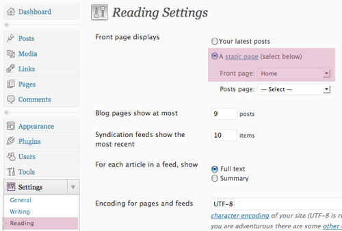You can edit the content as you wish using the shortcodes or sample page contents available.
Watch the video below to see how you can specify the homepage layout:
There are three different slider options available: "full slider", "content slider" and "3D slider". If you would like to use "full slider" or "content slider", you need to select a category for the posts which will be drawn into these sliders.
In the dummy content there is a sample category called "Featured" and some posts are assigned to that category. To draw an appropriate category into sliders please go to "Appearance - Theme Options" and select the appropriate category under "Slider Settings": 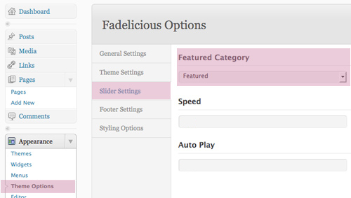
If you would like to use homepage with full slider the featured images must be equal or higher than 930x350px
If you would like to use homepage with content slider the featured images must be equal or higher than 640x350px
If you would like to use 3D slider then first of all make sure you have installed the piecemaker plugin (included in the plugins directory of the theme).
Note: Recommended 3D Slider width is 960px
After instaling the plugin make sure you read "Piecemaker - Help" instructions in Wordpress admin. Don't forget to add slides and transitions.
If you have created your piecemaker, go to page "3D Slider" or create a new page and paste [piecemaker id='your_id'/] (your_id = id).
Blog
Go to "Theme Settings" under "Appearance - Theme Options" and select the appropriate category for blog posts.
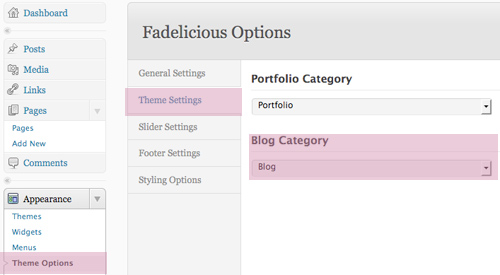There are 2 different blog page layouts available.
The posts that are assigned to "blog category" will all be displayed in these pages. Put one of these pages into your menu to use.When creating a blog post you can add images by using the "add image" button and after uploading the image click on "Use as featured image".
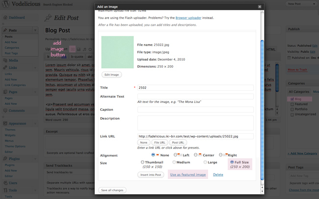Note: If you want some blog posts to be displayed in the content slider or full slider first assign these posts to "Featured" category as well and then make sure you upload images with correct sizes (Read "Sliders on Homepage")
Choosing a blog layout and creating a blog post with featured image are shown in the video below:
Note that you won't need to add the blog page to the menu eveytime you create a blog post.
Portfolio
Go to "Theme Settings" under "Appearance - Theme Options" and select the appropriate category for portfolio posts.
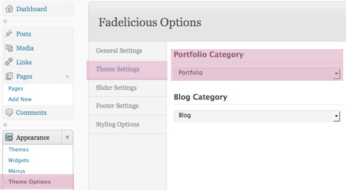Then assign your posts to child categories of Portfolio:
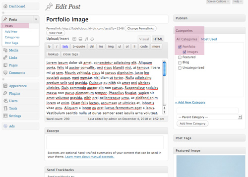IMPORTANT: If you don't create child categories and assign them to portfolio posts the portfolio page could not display anything.
There are 4 different portfolio page layouts available.
- Portfolio 1: Carousel layout with post extracts [Link]
- Portfolio 2: Carousel layout without post extracts [Link]
- Portfolio 3: Grid layout with post extracts [Link]
- Portfolio 4: Grid layout without post extracts [Link]
You can always change between these layouts when you get bored. You will only need to change the page on the menu. You won't need to edit your portfolio posts.
When creating a portfolio post you can add images by using the "add image" button and after uploading the image click on "Use as featured image".
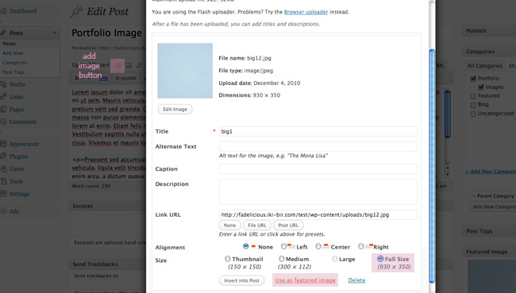Make sure your portfolio image width are not less than 630px!
Note: If you want some portfolio posts to be displayed in the content slider or full slider first assign these posts to "Featured" category as well and then make sure you upload images with correct sizes (Read "Sliders on Homepage")
If you want to add multiple images to be displayed put the links of the other images with custom name "others":

All available portfolio layouts were added to the menu in the video, but you will only select one and only put that one in the menu. You can always change between these layouts when you get bored. You will only need to change the page on the menu. You won't need to edit your portfolio posts.
Note that selecting "Featured" category is optional. Don't assign a post to the Featured category if you don't want it to be displayed in the slider.
If you want to add videos to portfolio posts put the video link to custom fields under creating a post page with custom name: "main_video"
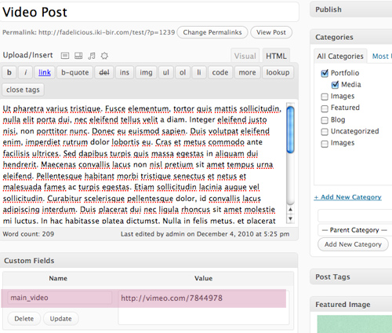This way your video will be displayed in the lightbox.
If you want to add music to portfolio posts put the video link to custom fields under creating a post page with custom name: "main_music"
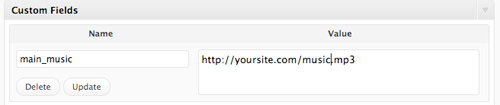This way your mp3 will be displayed in the lightbox.
If you want to add multiple videos to be displayed put the links of the other videos with custom name "others":
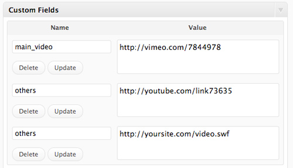If you want to add multiple mp3 files put the links of the other mp3 files with custom name "others":

If you want a post with video appear in the slider you need to enter its embed code as custom field with the name "embed":
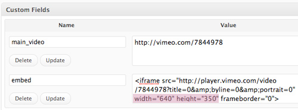Note: If you're using the full slider your embed code must have the values width=930 and height=350.
If you're using the content slider then those values need to be width=640 and height=350.
If you want to add URLs to portfolio post zoombox captions put the link to custom fields under creating a post page with custom name: "site_url"
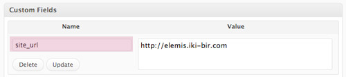You can create menus from "Appearance - Menus" in Wordpress admin. If you don't know how to create Wordpress 3.0 Menus please watch the video below or read here.
After creating your menu don't forget to choose that menu as "The Main Menu" at top left.
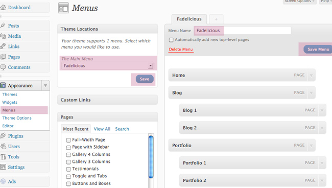Make sure you select only the pages you want to appear in the menu.
You can create your own pages by modifying the pages in dummy content or creating your own ones using the shortcodes etc. Then you can select these pages to appear in the menu.
Gallery
If you would like to add a gallery page choose the layout you want from page templates and upload your images using "add image" button.
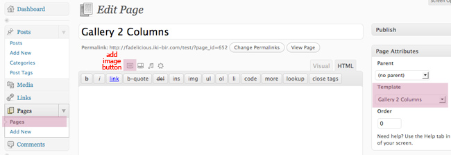If your images are not being displayed make sure functions/img-resize/cache folder permissions are 777.
Contact
There is a sample contact page available in the dummy posts. You can modify the content as you wish.
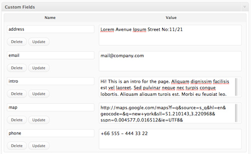Please don't forget to add your email address in "Appearance - Theme Options" to receive messages.
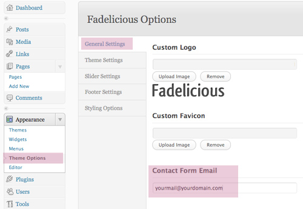Please go to http://maps.google.com/ and write your address to find it on the map. Then copy the link from the "Link" button on top right corner and paste into the map custom field in the contact page.
Category, Tag, Archive, Search
The default layout used for these pages is blog-layout-1 (grids). However if you want to display your posts in these pages with blog-layout-2, then please rename the below php files as follows:
- archive2.php -> archive.php
- category2.php -> category.php
- search2.php -> search.php
- tag2.php -> tag.php
Since there are php files with those names already, either delete the existing ones or change their names to something else.
Other Information
The widgets used in the live preview:
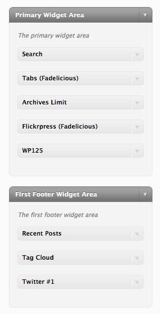Note: If you would like to use Flickr, Twitter or Ads widgets please upload the plugins that come with the theme.
Sources
- DDSmoothmenu: Menu script [Source Link]
- jQuery Cycle Plugin: Full Slider and Content Slider script [Source Link]
- jCarousel: Script used in the layouts Portfolio 1 and Portfolio 2 [Source Link]
- Quicksand: Script used in the layouts Portfolio 3 and Portfolio 4 [Source Link]
- Sliding Effect: Sliding script used in the menu items and sidebar lists
- Tabs: Script used in sidebar tab widget. [Source Link]
- Zoombox: Script used for lightbox effect. [Source Link]
Note: These plugins are modified for Fadelicious theme so please upload the versions that are available in the theme package. But you can learn about the plugins from the links below:
- Piecemaker: 3D Slider [Source Link]
- Flickrpress: Flickr for sidebar or footer. [Source Link]
- WP125: Adding advertisement banners on sidebar. [Source Link]
- Twitter: Twitter for footer. [Source Link]
- Font: [Source Link]
- Service Icons: [Source Link]
- Social Icons: [Source Link]
- Bullet Icon: [Source Link]
- Contact Icons: [Source Link]
Note: The token icon set is used under commercial license.